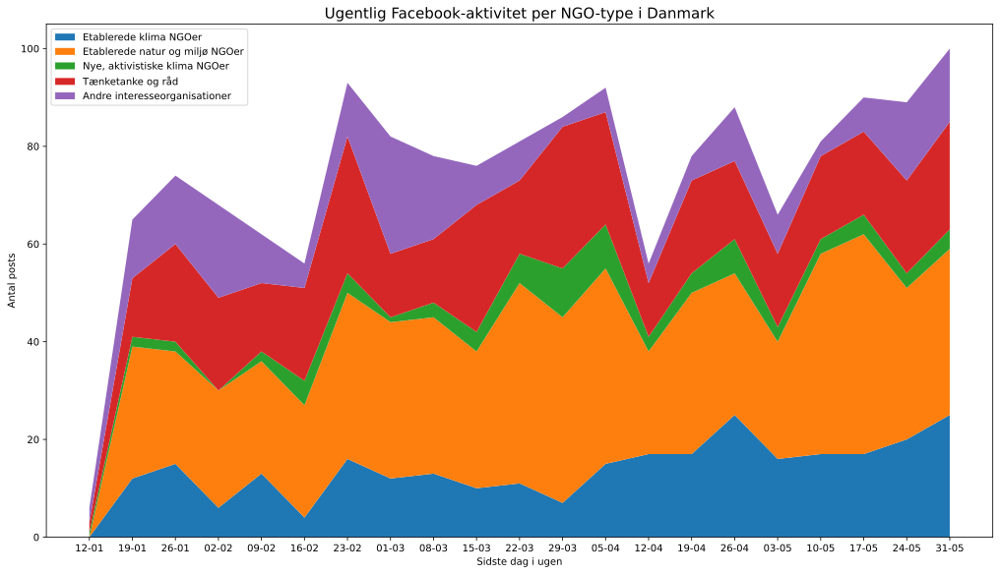
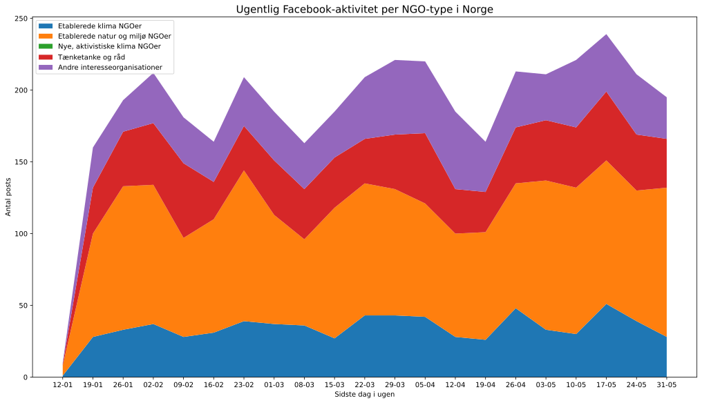
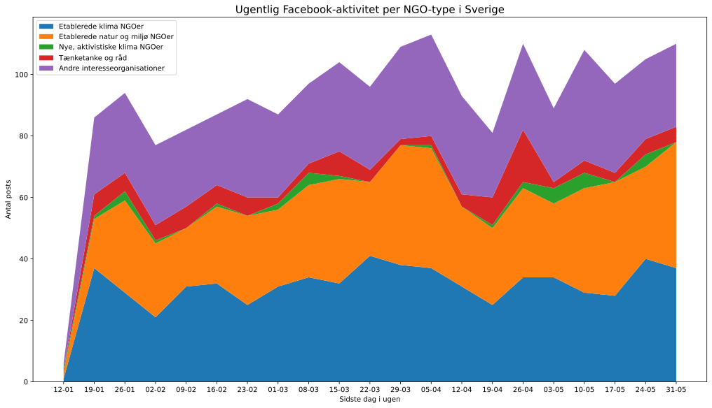

1. Introduktion: kamp om risiko-opmærksomheden
Håndtering af corona-pandemien har af gode grunde fyldt meget på borgernes, mediernes og politikernes dagsordener over de seneste måneder, og særligt i takt med at samfund som det danske er blevet lukket helt eller delvist ned fra marts 2020. Samtidig er der imidlertid foregået en kamp om offentlighedens risiko-opmærksomhed, hvor særligt de grønne ikke-statslige organisationer (NGO’er) har arbejdet ihærdigt på at holde fokusset på klima og grøn omstilling ved lige. Denne kamp er ikke mindst foregået på de sociale medier, hvis betydning for offentlig dialog, holdningsdannelse og politisk dagsordensættelse er vokset kraftigt over det seneste årti (Blach-Ørsten et al. 2017). I denne blogpost vil vi i hovedtræk analysere, hvordan kampen om risiko-opmærksomheden er foregået på de sociale medier Twitter, Facebook og Instagram i de tre skandinaviske lande, Danmark, Norge og Sverige, med særligt fokus på de grønne NGO’ers aktivitet, indbyrdes netværk og tematiske fokuspunkter.
I dansk kontekst har Altinget for nyligt offentliggjort en analyse, som baseret på oplysninger fra Infomedia viser, at de traditionelle mediers dækning af klimadagsordenen faldt betydeligt i tiden umiddelbart op til og i månederne efter regeringens delvise nedlukning af landet 11. marts 2020, sammenholdt med perioden fra efteråret 2019 og frem (Øyen 2020). Dette skal ses i sammenhæng med, at regeringens klimahandleplan-proces i samme periode (marts-maj 2020) har været sat delvist i bero. Opgørelsen viser tilsvarende, at medierne i denne periode har dækket coronavirus massivt. Billedet ændrer sig delvist igen ved indgangen til juni måned, hvor klima vender tilbage på såvel politikernes som mediernes dagsordener - uden dog endnu (per 5. juni 2020) at være nået på niveau med coronavirus. Det er således i denne kontekst, at danske grønne NGO’ers kamp om de sociale mediers fokus skal ses. I Norge og Sverige følger klima- og omstillings-politiken andre spor og rytmer end den danske. Mens der os bekendt ikke endnu findes tilsvarende opgørelser, så må det dog formodes, at de traditionelle mediers vægtning af henholdsvis corona- og klima-stof følger et bredt sagt tilsvarende mønster til det danske.
Den data-høstning, der ligger til grund for analyserne i denne blogpost, er foregået siden maj 2020 og fokuserer på perioden fra årsskiftet 2020 og frem til nu, juni 2020. Data-arbejde og -analyser er foretaget i regi af Københavns Universitets Center for Social Data Science (SODAS, https://sodas.ku.dk/), af et samlet hold bestående af 12 studerende og forskere med baggrunde i blandt andet sociologi, antropologi og økonomi. Store mængder digitale data er her blevet høstet (scrapet) på hver af de tre platforme (Twitter, Facebook, Instagram) under hensyntagen til gængse data-etiske og -juridiske retningslinjer og med fokus på forsvarlig, anonymiseret opbevaring og deling af potentielt følsomme persondata (Veltri 2019). Parallelt hermed har forskere foretaget såkaldt netnografiske (Kozinets 2020) udforskninger af NGO-landskabet i de tre lande, med henblik på at opnå mere dybdegående og komplementære indsigter i de grønne organisationers sproglige og visuelle taktikker under corona-tiden.
Projektet er finansieret af en straks-bevilling fra Velux-fondens pulje for covid-19 samfundsvidenskabelige data-indsamlingsprojekter (https://sodas.ku.dk/research/is-the-corona-pandemic-supporting-or-crowding-out-the-attention-towards-green-transition/)) og medfinansieret af SODAS samt forskningsprojektet DISTRACT (https://sodas.ku.dk/projects/distract/). Indeværende blogpost er her udtryk for en første analyse, med afsæt i en delmængde af det samlede datasæt, som projektet producerer og stiller til rådighed for fremadrettet udforskning. Mere specifikt høstes data i to sampling-runder, hvoraf den første - som benyttes her - tager afsæt i et udvalg af etablerede grønne NGO’er i hvert af de tre lande, mens den anden - som pågår i øjeblikket og derfor endnu ikke kan analyseres - udvider fokuset til at dække de samlede debat-rum på sociale medier omkring corona og klima mellem NGO’er, erhvervsorganisationer, forskere, politikere og borgere. I det følgende bør læseren derfor være opmærksom på, at analyserne siger noget om digital klima-aktivisme og NGO’ernes indbyrdes relationer i en corona-tid, men endnu ikke noget fyldestgørende om deres relative plads og indflydelse i samfundenes bredere, dagsordensættende processer.
Det gælder endvidere, at afsættet her primært udgøres af Twitter-data, suppleret af nedslag fra de netnografiske undersøgelser og kun sekundært suppleret af data fra Facebook og Instagram. Man skal her være opmærksom på, at Twitter som socialt medie betragtet har en række særkender, herunder at mediet i de skandinaviske lande har en relativt “elitær” politisk profil, eftersom det primært benyttes af politikere, interesseorganisationer, journalister og forskere og i mindre grad af “almindelige” borgere (Blach-Ørsten et al. 2017). For indeværende analyse betyder det omvendt, at NGO’ernes tweet-aktivitet i vid udstrækning kan fortolkes netop som udtryk for deres forsøg på at påvirke den officielle, politiske dagsorden. At vi løbende har mulighed for at inddrage de netnografiske undersøgelser betyder endvidere, at vi samtidig har mulighed for at fortolke på bevægelser i det samlede NGO-landskab, som ikke eller ikke primært foregår på og sætter spor på Twitter.
2. NGO-landskabet og organisationernes aktivitet i perioden
Som afsæt for undersøgelse af grønne NGO’ers digitale aktivisme i de skandinaviske lande under corona har vi produceret og benyttet lister af etablerede, klima-engagerede NGO’er, som vi har fremskaffet via de officielle klimapolitiske høringsprocesser i de tre landes parlamenter (se “Metode” senere for de fulde lister). Vi har her tilstræbt en inkluderende tilgang, idet NGO’er er kommet med på vores liste hvis de har været hørings-aktive mindst én gang under de seneste fire til seks større klimapolitiske høringsprocesser. Vi har i processen benyttet en fleksibel definition af “klima-engagerede NGO’er” som civile, ikke-statslige og ikke-kommercielle organisationer, der har klima som et væsentligt, men ikke nødvendigvis altdominerende, omdrejningspunkt for deres arbejde, aktivisme og oplysning. Vi har her inkluderet tænketanke i kategorien NGO’er, men ekskluderet erhvervs- og andre interesseorganisationer, forskningsorganisationer og formelle, politiske organer såsom styrelser eller kommuner. Vores endelige NGO-lister for Norge og Sverige er blevet ekspert-valideret i dialog med en klima-samfundsforsker i hvert land. Vi er desuden opmærksomme på, at sampling-tilgangen favoriserer etablerede, nationale NGO’er over mere lokale eller uformelle frivilligheds- og aktivisme-grupper. Eksempelvis optræder Extinction Rebellion ikke i det datasæt, vi her analyserer på (om end de vil indgå i næste runde af vores videre sampling).
Figur 1 nedenfor viser en simpel opgørelse over, hvor meget de respektive NGO’er i de tre lande har tweetet i perioden 6. januar til 24. maj 2020. I alt har vi at gøre med 874 danske tweets, 2.575 norske tweets og 2.466 svenske tweets. Der ses her et relativt ens-lignende mønster, hvor relativt få organisationer står bag størsteparten af den samlede tweet-aktivitet, mens de fleste organisationer har været mindre aktive. Fordelingen af konkrete organisationer i dette mønster varierer dog samtidig på tværs af landene, og det norske NGO-landskab skiller sig ud ved at have flere, relativt aktive organisationer. Således er Greenpeace den klart mest Twitter-aktive NGO i det danske NGO-landskab, mens denne rolle i Norge indtages af naturbeskyttelsesorganisationen Naturvernforbundet og den liberale tænketank Civita, mens det i Sverige er den svenske kirke som et civilt, ikke-statsligt organ. Omkring sidstnævnte må bemærkes, at selv om den svenske kirke har et relativt klart markeret klima-engagement, så relaterer hovedparten af de tweets, der indgår i vores graf, sig snarere til corona (og andre temaer) end til klima (fordeling ikke vist på graf). Man kan således diskutere, om man snarere bør betragte WWF Sverige som den mest aktive af de egentlige klima-NGO’er.

|
Figur 1.A: Antal tweets per NGO i Danmark. For Danmark er aktiviteten yderligere delt op efter andelen af tweets, der indeholder mindst ét af en række ord knyttet til klima og/eller corona.
|

|
Figur 1.B: Antal tweets per NGO i Norge.
|

|
Figur 1.C: Antal tweets per NGO i Sverige.
|
For det danske datasæts vedkommende viser figuren tillige en opgørelse over indholdet i organisationernes tweets. Denne opgørelse er lavet ud fra lister af henholdsvis klima- og corona-relaterede termer, som foruden ord hvori disse termer indgår (“klimaforandringer”, “coronavirus”) også indeholder ord, der hyppigt anvendes sammen med disse termer (defineret gennem en såkaldt word-2-vec-model for automatiseret vektor-klassificering af termer i et tekstbaseret datasæt; se “Metode” senere).[1] Her fremgår det, at størsteparten af de grønne NGO’er primært tweeter om klima-relaterede emner (inklusiv natur, miljø og bæredygtighed) i perioden (orange), og kun sekundært forbinder disse til corona og covid-19 (grøn). Undtagelserne er primært tænketanke (CEPOS, Cevea), som enten tweeter om corona eller helt andre temaer. Opgørelsen bekræfter det billede af en risiko-opmærksomheds-kamp, som vi skitserede til indledning: for de grønne NGO’er har denne del af corona-tiden tilsyneladende primært handlet om i videst muligt omfang at bibeholde et fokus på klima- og omstillings-dagsordenen, herunder altså gennem at tweete om disse temaer.
Vores netnografiske observationer kan bruges til at supplere og uddybe med en række mere specifikke fortolkninger af grafen. For det første kan den relativt store, grønne bjælke hos Greenpeace i Danmark formentlig forklares ud fra deres kampagne ‘Nej til normal’, der netop taler specifikt om forholdet mellem covid-19 og klima gennem at appellere til, at vi som samfund ikke bør vende tilbage til en ubæredygtig normaltilstand fra før corona. Denne kampagne kan, for det andet, ses som supplement eller konkurrent til kampagne-hashtagget #grøngenstart, som ifølge Concito er udsprunget hos dem i dagene omkring slutningen af marts. Det bemærkes her, at også Concitos grønne bjælke er relativt stor, formentlig som følge af andelen af #grøngenstarts-tweets. Det er endvidere vores vurdering, at mens Greenpeace altså tweeter mere end Concito (og andre) om overlappet mellem corona og klima, så er det #grøngenstart der har opnået den største gennemslagskraft uden for NGO-landskabet, idet sloganet her bruges ganske bredt af indflydelsesrige politikere (bl.a. klimaminister Dan Jørgensen) og interessegrupper i erhvervslivet. Vores kommende undersøgelser vil dykke dybere ned i disse relationer.
Det tilsvarende, netnografisk baserede indtryk af det norske NGO-landskab er, at debatterne her generelt er mere spredte end i Danmark, men også at de i ret stor grad formes af olieindustriens rolle i økonomien (Civitas placering bør eksempelvis tolkes i dette lys). I Sverige ser Naturskyddsföreningen ud til at have været aktiv i at koble klima og corona, herunder i debatter om læring fra corona-håndteringen til indfrielse af landets mål om fossilfrihed. Her afventer vi grundigere analyse. Generelt for graferne i figur 1 gælder som antydet, at billedet for alle landene ville se lidt anderledes ud, hvis særligt Extinction Rebellion og Fridays for Future, altså de nyere klima-aktivistiske grupper, var medtaget. Ligeledes gælder det for alle tre lande, at Facebook er en hyppigere anvendt platform end Twitter for flere af NGO’erne, om end ofte med et mere organisations-internt sigte, hvor Twitter som nævnt bruges mere politisk dagsordensættende (Pearce et al. 2020). Endelig kan det bemærkes, at flere organisationers brug af Twitter bærer præg af meget aktive enkelt-repræsentanter, hvis tweets efterfølgende re-tweetes af organisationens konti. Det gælder eksempelvis Greenpeace og Concito i Danmark.
For at komme nærmere en forståelse af de forskellige NGO’ers indsatser under corona-tiden og hvordan disse eventuelt er skiftet over perioden har vi inddelt vores NGO-liste-aktører i fem hovedtyper:
-
Etablerede miljø-NGO’er (f.eks. Greenpeace, WWF; typisk grundlagt i miljøbevægelsens blomstringstid i 1960’erne og 1970’erne)
-
Etablerede natur-NGO’er (f.eks. naturfredningsforeninger, friluftslivs-foreninger; ofte grundlagt i mellemkrigstiden)
-
Nyere, klima-aktivistiske grupperinger (f.eks. Extinction Rebellion, Fridays for Future; grundlagt i det seneste årti med entydigt og kritisk klimafokus)
-
Tænketanke og råd (f.eks. Concito, Ungeklimarådet; grønne organisationer med større fokus på vidensressourcer end på aktivisme)
-
Andre klima-relevante aktører (f.eks. Vedvarende Energi, Forbrugerrådet Tænk; organisationer for hvem miljø, klima og omstilling er ét blandt flere temaer)
Nedenstående figur 2 viser tweet-aktivitetsniveauet for disse hovedtyper af NGO’er, fordelt på ugebasis fra starten af januar til slutningen af maj 2020. Generelt fremkommer her et billede af ganske markante udsving over tid, knyttet til større eller mindre begivenheder i det respektive land (hvilket vi uddyber nedenfor). Der ses endvidere interessante forskelle mellem landene i forhold til, hvilke hovedtyper af NGO’er der fylder mest i landskabet. Mens det i Danmark og Sverige gælder de etablerede miljø-NGO’er (når man ser bort fra den svenske kirke der, som det fremgår, har været særdeles aktiv i corona-tiden), så gælder det i Norge i lige høj grad de etablerede natur-NGO’er.

|
Figur 2.A: Ugentligt antal tweets fordelt efter type af NGO i Danmark.
|

|
Figur 2.B: Ugentligt antal tweets fordelt efter type af NGO i Norge.
|

|
Figur 2.C: Ugentligt antal tweets fordelt efter type af NGO i Sverige.
|
Indtrykket fra netnografien er i overensstemmelse hermed, at klimadebatten i Norge generelt kredser ganske meget om natur, herunder i form af natur-tab, biodiversitet og friluftsliv. I corona-tiden laver flere organisationer her en kobling mellem natur-tab og pandemier, ud fra argumentet at global opvarmning ødelægger levesteder og tvinger dyr tættere på menneskelige bosteder. Denne problemstilling forbindes endvidere ofte til olie-problematikken og spørgsmålet om, hvor i Arktis som sårbart økosystem Norges olieudvinding foregår. Også på Instagram præsenterer de norske NGO’er sig særligt gennem billeder af natur, friluftsliv samt billeder med tilhørende slogans. Her ses forsøg på at fastholde vigtigheden af klima-kampen, hvilket eksemplificeres i nedenstående billede fra Forum for utvikling og miljø:
Det bemærkes, at de nyere klima-aktivistiske grupperinger kun er repræsenteret i det danske Twitter-datasæt, i form af Klimabevægelsen som paraply for flere af græsrodsgrupperne (Den Grønne Studenterbevægelse, Folkets Klimamarch osv.). Til trods for, at disse græsrodsgrupper ikke selv optræder i vores materiale (fordi de ikke har opnået status som hørings-aktører), så er det tydeligt fra netnografien, at flere af dem har været særdeles aktive under corona-tiden i alle tre lande. Indirekte ses formentlig spor heraf i det forhold, at der i perioden op til den 24. april, hvor der afholdes digital skole-klima-strejke internationalt, synes at ske en vis stigning i tweet-aktiviteten, i hvert fald i Danmark og Norge. At det samme ikke ses tydeligt for Sverige er her entydigt en effekt af data-udvælgelsen, idet Greta Thunberg og Fridays for Future, som i høj grad udsprang her, også har været aktive i corona-perioden.
Særligt for Norge, hvor udsving i tweet-aktivitet er udpræget markante, kan der peges på følgende specifikke baggrunde for mønsteret over tid. Den 29. februar udgiver forfatteren og biologen Dag O. Hessen bogen “Verden på vippepunktet”, og han opnår hurtigt ekspert-status hos flere NGO’er, som benytter bogens budskaber til at tale om koblingen mellem klima og corona. I dagene omkring slut-marts og start-april vedtager den norske regering en række tiltag, herunder en corona-fond, som gør spørgsmålet om grønne hjælpepakker meget aktivt og aktuelt i NGO’ernes kommunikation. I slutningen af april træffer den norske regering beslutning om ikke at flytte iskanten, og dermed grænsen for olieudvinding, længere sydpå, trods opfordring og senere kritik fra et bredt udsnit af klima-NGO’erne. Generelt er der i Norge en lidt stærkere variant af en kritik, der også genfindes i Danmark, nemlig at regeringen lytter meget til eksperter, når det kommer til corona, men overhører disse når det kommer til natur og klima.
I Danmark ses der i dagene slut-marts til start-april formentlig en effekt af, at #grøngenstart bliver skabt som samlende slogan. Øvrige udsving synes herudover præget af den konkrete timing i regeringens corona-retningslinjer, såsom ændrede afstandsregler, genåbning osv. Dog kan det forhold, at aktiviteten generelt stiger op gennem maj måned formentlig kobles til det forhold, at der her opbygges forventninger til og skabes pres på regering og Folketing for at genoptage arbejdet med klima-handleplanerne. Det stemmer således overens med det billede, som Altingets Infomedia-opgørelse tegner (Øyen 2020). En yderligere forståelse af de skift, der antageligt sker i NGO’ernes taktikker i denne periode, vil imidlertid kræve mere dybdegående analyse.
Det Twitter-baserede billede af NGO-landskaberne i de tre skandinaviske lande nuanceres imidlertid også, når vi supplerer med data fra Facebook. I figur 4 nedenfor ses Facebook-aktivitetsniveauet for de samme hovedtyper af NGO’er, fordelt på ugebasis fra 12. januar til slutningen af maj 2020. De ugentlige opslag på Facebook er omtrent lige så hyppige som tweets på Twitter, om end opslag på Facebook er lidt hyppigere end tweets for de danske og de norske NGO’er. Den ugentlige hyppighed i Facebook-posts er generelt mere stabil over tid end det ses for tweets.

|
Figur 4.A: Ugentligt antal Facebook-opslag fordelt efter type af NGO i Danmark.
|

|
Figur 4.B: Ugentligt antal Facebook-opslag fordelt efter type af NGO i Norge.
|

|
Figur 4.C: Ugentligt antal Facebook-opslag fordelt efter type af NGO i Sverige.
|
Mens de etablerede miljø-NGO’er i særligt Danmark altså tweeter mest hyppigt relativt til de andre NGO-typer (jf. figur 2), så er de etablerede natur-NGO’er mere aktive på Facebook. Der synes altså delvist at være tale om en slags arbejdsdeling mellem NGO-typerne i deres foretrukne platforme, formentlig forbundet med forskellige typer kommunikation (mest offentligheds-rettet på Twitter, mere organisations-rettet på Facebook) (Pearce et al. 2020). Vi har ikke her mulighed for at dykke nærmere ned i denne ellers interessante pointe. Særligt for Norge må aktiviteten hos de etablerede natur-NGO’er ses i lyset af at den samme organisation, Forum for Natur og Friluftsliv, ikke har én Facebook-side, men mange lokale (11 i alt), hvilket driver en del af aktiviteten op. Derudover illustrerer Figur 4 det ønskværdige i at inkludere flere sociale medieplatforme i en undersøgelse som denne, da graferne for alle lande, og måske særligt Sverige, rummer betydelige forskelle til det Twitter-baserede billede af digital klima-aktivisme. Eksempelvis ses det, at de nye klima-aktivistiske grupper er repræsenteret i det svenske Facebook-datasæt, idet PUSH har en Facebook-side, men ikke en Twitter-profil. Disse kryds-platforms-dynamikker agter vi at studere nærmere i kommende analyser (se “Afslutning og perspektivering”).
3. Socio-organisatoriske netværk mellem NGO’erne
Digitale data fra en platform som Twitter giver, foruden analyser over tid som de netop præsenterede, mulighed for at kigge nærmere på diverse netværksrelationer mellem aktører som er aktive på platformen (Veltri 2019). I figur 5 nedenfor giver vi en visuel fremstilling af retweet-netværket mellem NGO’erne i hvert af de tre lande, baseret på data i perioden januar til maj 2020. Netværkene er såkaldt retningsbestemte, idet pile angiver, at en bestemt NGO retweeter en anden NGO’s tweet. Netværkene er tillige vægtede, således at tykkelsen på pilene er et mål for antallet af retweets i perioden. Af det danske netværk ses det således f.eks., at Klimabevægelsen både i nogen grad retweetes af flere andre NGO’er og selv i udpræget grad retweeter Greenpeaces udmeldinger.

|
Figur 5.A: Retweet-netværk mellem NGO’erne i Danmark. Pilen angiver retningen af retweet. Tykkelsen på forbindelser angiver antallet af retweets. Størrelse på noderne indikerer antallet af andre NGO, der retweeter noden. Farven på noden indikerer antallet af andre NGO’er, som den pågældende node retweeter.
|

|
Figur 5.B: Retweet-netværk mellem NGO’erne i Norge. Se beskrivelse i figurteksten til figur 5.A.
|

|
Figur 5.C: Retweet-netværk mellem NGO’erne i Sverige. Se beskrivelse i figurteksten til figur 5.A.
|
Overordnet tegner der sig et mønster på tværs af alle tre lande, hvor der dels er en klynge af NGO’er, som retweeter hinanden - og som i den forstand fremstår som allierede eller i det mindste koordinerede i deres (social medie-)indsats - og en anden gruppe af NGO’er, der ikke på samme måde inkluderes i disse Twitter-baserede netværk. For både Danmark og Norge gælder, at centrum af netværket udgøres af de NGO’er, der også er mest tweet-aktive i perioden (Greenpeace og Klimabevægelsen i Danmark, Naturvernsforbundet i Norge). Her bekræftes således billedet af disse konkrete organisationer som centrale for den måde, det samlede grønne NGO-landskab i de to lande har reageret på corona-situationen. Dog bør forskellen i pilenes retning medtænkes: det forhold, at Klimabevægelsen retweeter mere end de selv retweetes antyder eksempelvis, at organisationen måske nok spiller en koordinerende rolle, men ikke nødvendigvis er dagsordensættende.
Til perspektivering kan det siges, at der på Instagram endvidere ses ligheder i måden disse centrale NGO’er (Greenpeace, Klimabevægelsen og Naturvernsforbundet) præsenterer sig selv visuelt (figur 6). Her benyttes et tydeligt corona-overlap i det visuelle indhold som én måde at forsøge at holde fast aktualiteten af i “klimakampen”. Måden hvorved de centrale danske NGO’er i Twitter-netværket præsenterer deres agenda visuelt på Instagram, særligt i form af tekst-billeder, piktogrammer, dyr og mennesker, eksemplificeres gennem nedenstående billeder fra henholdsvis Klimabevægelsen og Greenpeace:
Det svenske retweet-netværk ser noget anderledes ud, eftersom den mest aktive aktør (kirken) er placeret i periferien, alt imens Concord Sverige og Forum Syd som bredspektrede paraplyorganisationer for global bæredygtighed og udvikling står centralt. Denne klynge har således primært et humanitært fokus, centreret omkring 2030-Agendaen (FN’s verdensmål for bæredygtig udvikling). Concord fungerer tillige som talerør for både Diakonia og LSU, og organisationerne har blandt andet under corona-tiden taget initiativ til en række fælles henvendelser til regeringen og til svenske EU-parlamentarikere med budskaber og opfordringer til at der handles på udviklingsarbejdet i lyset af corona-krisen. Relativt afkoblet herfra ses en anden klynge i det svenske netværk, som i højere grad består af natur- og miljø-NGO’erne, og som fremstår som en mindre og mindre aktiv variant af mønsteret fra Norge og Danmark. I denne del-klynge bekræftes Naturskyddsföreningens placering.
Til perspektivering for det danske landskab kan igen bemærkes, at mens Concito får ganske få retweets, så har deres (angivelige) hashtag #grøngenstart alligevel spredt sig ganske bredt (se herom også figur 8 senere).[2] Også på Instagram bemærkes Concitos (angivelige) hashtag #grøngenstart blandt profilens visuelle selvfremstilling (figur 7). Et eksempel herpå og en visuel forklaring på principperne bag hashtagget, ses nedenfor:
Omvendt har Greenpeaces pendant “Nej til normal” ikke opnået samme gennemslag, til trods for, at mange andre organisationer hyppigt retweeter organisationens tweets (jf. figur 5). Der er således ikke umiddelbart nogen simpel sammenhæng mellem en organisations centralitet i retweet-netværket og dens evne til at sprede og få andre til at indoptage et hashtag-baseret slogan. Man kan tilmed danne den hypotese, at sidstnævnte proces fremmes for så vidt den ikke sker via retweets, fordi andre organisationer hermed i højere grad selv kan opleve ejerskab til sloganet. Vi kan på nuværende grundlag ikke komme nærmere en afklaring af dette forhold. Dog virker det rimeligt at tilføje, at Greenpeaces centrale placering i retweet-netværket formentlig hænger sammen med deres udpræget professionelle brug af visuelle kommunikationsmidler under corona-tiden (Pearce et al. 2020). Dette forhold agter vi også at arbejde videre med i fremtidige analyser.
4. Tematiske knudepunkter i NGO-landskabet under corona
Hvor de hidtidige analyse-nedslag har fokuseret på aktivitetsniveauer over tid samt organisationstyper og NGO’ernes indbyrdes netværk i corona-situationen, så vil vi i denne sidste delanalyse kigge nærmere på de temaer, som de klima-engagerede NGO’er artikulerer på Twitter. Dette vil vi gøre gennem brug af en relativt udbredt metode-teknik, kendt som co-hashtag-analyse (Marres & Weltevrede 2016). Denne teknik tager udgangspunkt i det enkelte tweet som den analytiske enhed og kigger hernæst på den måde, NGO’erne knytter hashtags sammen gennem at bruge to eller flere i det samme tweet. Når dette gøres på tværs af et (relativt) stort Twitter-datasæt, sådan som vi gør her, kan sam-forekomsten (‘co-’) af hashtags fortolkes som tematiske klynger eller knudepunkter i det samlede debat-landskab. Disse landskaber vises i figur 8 nedenfor, idet netværkene er farvelagt efter såkaldte modularitets-mål, der netop lokaliserer delklynger i det samlede netværk.

|
Figur 8.A: Co-hashtag netværk fra NGO’ernes tweets i Danmark. Netværket er den største, forbundne komponent for hvert land (indeholder ca. 2/3 af alle hashtags for hvert land). Hver node er et hashtag, og to hashtags er forbundet, hvis en NGO har benyttet sig af de pågældende hashtags i samme tweet. Størrelsen på noden indikerer hvor mange andre hashtags den er forbundet til. Tykkelsen på forbindelsen angiver hvor ofte to hashtags er blevet brugt sammen. Farverne angiver klynger identificeret vha. en modularitets-algoritme. Bemærk at farverne ikke kan sammenlignes på tværs af lande. Klik på figuren for at åbne en forstørret version.
|

|
Figur 8.B: Co-hashtag netværk fra NGO’ernes tweets i Norge. Se en beskrivelse at netværket i figurteksten til figur 8.A. Klik på figuren for at åbne en forstørret version.
|

|
Figur 8.C: Co-hashtag netværk fra NGO’ernes tweets i Sverige. Se en beskrivelse at netværket i figurteksten til figur 8.A. Klik på figuren for at åbne en forstørret version.
|
Overordnet er det tydeligt, at der i alle tre lande foregår en række parallelle samtaler om del-tematikker knyttet til klima, corona og deres mulige overlap, snarere end én stor og sammenhængende debat. Dette giver umiddelbart mening i lyset af den forskellighed i NGO-typer, som vi også tidligere har påpeget. Uden at dette umiddelbart kan aflæses af figuren, giver det således mening eksempelvis at tænke, at Twitter-samtaler om natur (herunder #dknatur i Danmark og #mernatur i Norge) i høj grad drives af de etablerede natur-NGO’er. I Sverige ses tilsvarende en decideret kirke-centreret tema-klynge. Hvad angår flere af de andre del-klynger, herunder dem der fokuserer specifikt på klima, er der dog antageligt tale om et bredere udsnit af organisationer.
Som én helt central fortolkning af netværkene vil vi fremhæve, at der ser ud til at være forskel i den måde, corona og covid-19 inddrages og gøres til tema blandt NGO’erne i de respektive lande. For Norge og Sverige indgår forskellige corona-relaterede hashtags således i forskellige del-klynger, idet corona således fremstår som en mindre del af mange forskellige samtaler (om natur, klima, global bæredygtighed osv.). I Danmark synes billedet modsat det, at corona- og covid-hashtags primært er samlet i én klynge (grøn, nederst), som herudover indeholder hashtags forbundet til arbejde, EU og verdensmålene. Her fremstår corona således som én (del-)samtale, der for disse NGO’er samler en række andre emner - men som i mindre grad kobles direkte til generelle spørgsmål om klima og næsten slet ikke til natur. Denne corona-klynge er snarere delvist koblet til en anden klynge (blå), der rummer erhvervsliv og medier, men også de direkte klima-aktivistiske hashtags #fridaysforfuture og #operationklimahandling.
Her tegnes således et billede af et dansk debat-landskab, hvor der antageligt iscenesættes et kritisk sammenstød omkring coronas økonomiske indvirkninger og implikationer (som skadeligt for erhvervslivet, som mulighed for omstilling). Men hvor der i øvrigt foregår en række natur-, miljø- og klima-aktiviteter i NGO-landskabet, der ikke direkte deltager i disse samtaler. Et nærmere netnografisk blik tjener til at underbygge denne fortolkning. I Danmark viderefører mange af NGO’erne således de praksisser og de sager, som de havde før corona-tiden, idet kun rammen om arrangementer ændres og tilpasses til corona-situationen. Det gælder eksempelvis kampagner for stop af olieudvinding i Nordsøen. Her kobles selve sagen ikke nævneværdigt til corona.
Det norske netværk bekræfter billedet af, at klimadebatten i Norge generelt handler mere om natur, end den gør i de to andre lande. Det er således sigende, at mange centrale corona-relaterede hashtags (#grønomstart, #krisepakker) kan findes i #mernatur-klyngen (blå). Elbil-klyngen synes primært drevet af et par organisationer, der delvist må forstås som interesseorganisationer (f.eks. Norsk Elbilforening), og som afspejler elbilernes relativt store udbredelse i Norge. Endvidere gælder det også i Norge, at visse miljø-NGO’er i høj grad viderefører deres dagsorden fra før corona ind i corona-tiden; det gælder eksempelvis i kampen om olien (#iskanten), om end også dette spørgsmål som tidligere nævnt til en vis grad sættes i forbindelse med corona. Også på Instagram er indtrykket, at klimadebatten i Norge i høj grad omhandler natur og således præsenteres visuelt gennem billeder af dyr, planter og natur-aktiviteter, hvilket eksemplificeres af nedenstående billeder (figur 9):
I Sverige er det overordnede billede, at der på den ene side pågår en “officiel” klima- og omstillings-politisk diskussion (#svpol, #svgreen), mens der på den anden side pågår en række forskellige del-debatter relativt afkoblet fra hinanden. Det gælder eksempelvis en diskussion om fremtidens mad (grøn, nederst), men også andre diskussioner om bæredygtigt forbrug, cirkulær økonomi, Agenda 2030 osv. Hvad angår sidstnævnte bestyrkes her billedet af, at det svenske NGO-debat-rum rummer relativt mange stemmer, der anlægger et bredt globalt fokus på bæredygtigheds- og udviklingsproblematikker, snarere end at fokusere på aspekter af den svenske indenrigspolitiske omstillingsproces. Det skyldes muligvis, at denne politik ikke i særlig grad har nydt politisk bevågenhed i perioden, måske bl.a. som udslag af den særstatus, Sverige er kommet til at indtage i sin corona-håndtering og relativt store berørthed. Nærmere bekræftelse heraf må dog afvente yderligere analyse.
I tillæg til ovenstående co-hashtag-analyse fra Twitter, har vi set på hvilket hashtags de klima-orienterede NGO’er bruger på Instagram. Her er udgangspunktet ikke længere tweets, men derimod billeder, som af NGO’erne tilføjes hashtags. I nedenstående, foreløbige netværk (figur 10) ses dels hvilke hashtags, som benyttes, samt hvordan de knyttes sammen. I lighed med ovenstående netværk fra Twitter (figur 8), er nedenstående netværk fra Instagram farvelagt efter modularitet-mål. Bemærk, at perioden for data-høst her er lidt anderledes end for Twitter (1. november 2019 til 1. juni 2020).

|
Figur 10.A: Co-hashtag netværk fra NGO'ernes Instagram i Danmark. Netværket består af de hashtags, som i perioden 1. november 2019 til 1. juni 2020 er føjet til de billeder, som NGO’erne har delt. Hertil også hashtags, som NGO’erne har valgt at følge. Klik på figuren for at åbne en forstørret version.
|

|
Figur 10.B: Co-hashtag netværk fra NGO'ernes Instagram i Norge. Netværket består af de hashtags, som i perioden 1. november 2019 til 1. juni 2020 er føjet til de billeder, som NGO’erne har delt. Hertil også hashtags, som NGO’erne har valgt at følge. Klik på figuren for at åbne en forstørret version.
|

|
Figur 10.C: Co-hashtag netværk fra NGO'ernes Instagram i Sverige. Netværket består af de hashtags, som i perioden 1. november 2019 til 1. juni 2020 er føjet til de billeder, som NGO’erne har delt. Hertil også hashtags, som NGO’erne har valgt at følge. Klik på figuren for at åbne en forstørret version.
|
Også her er det tydeligt, at der blandt NGO’erne i de tre lande foregår “samtaler”, eller måske snarere visuelle udvekslinger og gensidige anknytninger, med forskellige tematikker. Særligt opdelt synes udvekslingerne at være i Norge og Sverige, mens overlappet mellem de forskellige klima-relaterede tematikker synes større i Danmark. Co-hashtag-netværket fra Instagram bekræfter ligeledes det fra Twitter; nemlig at klimadebatten i Norge i højere grad kredser om natur end tilfældet er i de andre lande. På Instagram er kirke-tema-klyngen i Sverige-netværket også ganske markant, hvilket bidrager væsentligt til det opdelte billede. Vi vil fremadrettet dykke dybere ned i disse netværk, og herunder undersøge overlap og forskelle på tværs af platforme nærmere.
5. Tværgående opsamling: tre lande, tre forskellige debatter?
Formålet med de foregående delanalyser har været at give nogle første, begyndende overblik over den måde, landskabet af grønne og klima-engagerede NGO’er i henholdsvis Danmark, Norge og Sverige har reageret på corona-situationen i deres digitale aktivisme, med primært afsæt i organisationernes Twitter-aktivitet. Til opsamling kan vi sige, at der tegner sig et tværgående billede af såvel ligheder som ganske betydelige forskelle mellem de tre skandinaviske lande, hvad angår typen af aktive NGO’er og karakteren af diskussioner om det mulige overlap mellem klima og corona som to globale risici (Beck 2016). Vi vil i fremtidige analyser dykke dybere ned i disse forskelle og søge at forstå dem i lyset af landenes miljøpolitiske kultur og aktuelle, omstillings-politiske situation. Her skal vi blot forsøge at opridse nogle af de karakteristika og forskelle, vores foreløbige analyse har peget på.
I Danmark kan vi groft sagt inddele forløbet i fire overordnede faser. I perioden umiddelbart op til regeringens delvise nedlukning af samfundet 11. marts er der fortsat stor opmærksomhed på klimapolitikken, drevet blandt andet af en rapport fra Klimarådet. Efter nedlukningen indtræder imidlertid en mere afdæmpet NGO-linje, som delvist synes koordineret på tværs af landskabet, herunder som reaktion på Extinction Rebellions nøgen-aktion i Folketingssalen under forhandlingerne om corona-nedlukningen den 10. marts, der af flere ses som upassende i situationen. Fra slutningen af marts og ind i april er særligt Concito, Greenpeace og Klimabevægelsen imidlertid aktive i at forme en (relativt) fælles linje omkring muligheden for “grøn genstart”. Denne fase afløses fra omkring starten af maj af en tiltagende kritik af regering og Folketing for at arbejde for langsomt med de klima-handleplaner, der allerede var på den politiske dagsorden før corona. Når vi kommer ind i juni måned kan vi fra netnografien se, at de grønne NGO’er i stigende grad udtrykker kritik af Folketingets genstarts-planer, der anses for at mangle grønne, klimavenlige elementer. Samlet set formes NGO-forløbet således i ganske høj grad af det politiske mulighedsrum, som består i de klima-handleplans-forhandlinger, der umiddelbart forsinkes og dernæst genoptages over perioden.
I Norge formes det tilsvarende politiske mulighedsrum i højere grad af velkendte og langstrakte konflikter om olieudvinding og dens bæredygtighedsimplikationer, processer der i høj grad synes at fortsætte under corona-situationen. Tilsvarende er hoved-indtrykket, at de fleste norske grønne NGO’er fortsætter deres eksisterende taktikker nogenlunde “uforstyrret” af corona, om end corona også i Norge bliver katalysator for diskussioner og forhåbninger om et sporskifte til grøn omstilling, herunder i diskussioner om grønne hjælpepakker. Disse koblinger sker i højere grad end i Danmark og Sverige via diskussioner om natur-tab og biodiversitet, idet de etablerede natur-NGO’er her synes lige så aktive som de etablerede miljø-NGO’er i at forme NGO-debatterne. Det er samtidig slående, at de fleste diskussioner om corona i det norske NGO-landskab synes at aftage relativt tidligt, allerede fra midten af maj, sammenlignet med de to andre lande.
I Sverige synes der at være tale om en større pluralisme i del-debatter, der kæder corona og bæredygtig udvikling sammen, herunder med et større fokus på globale perspektiver, udvikling og social retfærdighed, end vi ser i de to andre lande. Også i Sverige forsøger NGO’erne at benytte corona til at skabe momentum for den grønne omstilling, gennem at appellere til handling i en krisesituation både globalt og lokalt. Særlig opmærksomhed samler sig om den såkaldte Agenda 2030, der udspringer af FN’s verdensmål, og hvor flere NGO-alliancer kræver stærkere og mere ambitiøs handling fra regeringens side. Det gælder både lokalt omkring bl.a. olieraffinaderier og globalt omkring nødhjælp til udviklingslande. Herudover kører en række lidt mindre og mere specialiserede diskussioner, der drives af bestemte organisationer, omkring forbrug og cirkulær økonomi, natur og biodiversitet samt samernes dobbelte, negative påvirkning fra covid-19 og klima. Det bemærkes, at svenske aktører i lighed med de norske, men i højere grad end de danske, synes at koble spørgsmål om dyrevelfærd og biodiversitet direkte til risikoen for fremtidige virus-pandemier.
Det må her igen understreges, at analyserne på nuværende tidspunkt er foreløbige, særligt når det handler om at vurdere den type af bredere offentlig og politisk gennemslagskraft, som NGO’erne har haft i de respektive lande. Dette vil først for alvor blive muligt at vurdere, når vores udvidede data-høstning på tværs af sociale medieplatforme ligger klar.
6. Metode
Som tidligere nævnt kombinerer vores analyse to primære datasæt for hvert af de tre lande: ét baseret på høst af de grønne og klima-engagerede NGO’ers tweets i perioden 6. januar til 24. maj 2020, og ét baseret på netnografiske observationer foretaget fra midten af maj til og med slutningen af juni. Der er i samme periode høstet tilsvarende Facebook- og Instagram-baserede datasæt, som imidlertid ikke er blevet underkastet systematisk analyse endnu og derfor fungerer supplerende til de to andre datasæt i indeværende blogpost. Den metodiske proces herfor gennemgås ikke her.
Twitter-datasættet er produceret ved høst af alle tweets i perioden fra de lister af NGO’er, vi har defineret som vores startsæt. Afsættet er her de fulde lister af de seneste fire til seks høringsrunder omkring national klimapolitik i de tre lande, som vi kvalitativt har kodet med henblik på at lokalisere alle “klima-engagerede NGO’er”. Listerne er blevet kodet af mindst to medlemmer af forskerholdet for at sikre såkaldt inter-koder reliabilitet. For Norge og Sverige er de desuden blevet gennemgået af en samfundsforsker med speciale i disse landes klimapolitik. De endelige lister ser således ud:
-
Danmark: 350 Klimabevægelsen, 92-gruppen, Cepos, Cevea, Concito, Danmarks Jægerforbund, Danmarks Naturfredningsforening, Det Økologiske Råd, Forbrugerrådet Tænk, Forenede Danske El-bilister, Frie Elforbrugere, Greenpeace, Klimarådet, Landsforeningen for Solcelleejere, Landsforeningen Naboer til Kæmpevindmøller, NOAH, Nordisk Folkecenter for Vedvarende Energi, Økologisk Landsforening, Rådet for bæredygtig trafik, Rådet for Grøn Omstilling, Regstrup natur- og miljøforening, Ungeklimarådet, Vedvarende Energi, Verdens Skove, WWF Verdensnaturfonden (25 organisationer i alt)
-
Norge: Attac Norge, Cicero, Civita, Det Kgl. Selskab for Norges Vel, Forum for natur og friluftsliv, Forum for utvikling og miljø, Fremtiden i våre hender, Friluftslivets fellesorganisasjon, Friluftsrådenes landsorganisasjon, Greenpeace, Miljøstiftelsen Bellona, Natur og ungdom, Naturvernforbundet, Norges Astma- og Allergiforbund, Norges Miljøvernforbund, Norsk elbilforening, Norsk forening mod støy, Norsk Klimastiftelse, Regnskogfondet, Røde Kors, Samarbeitsrådet for biologisk mangfold, Spire, Syklisternes landsforening, Tankesmien Agenda, WWF Norge, ZERO (26 organisationer i alt)
-
Sverige: 2022 Initiativ Foundation, Ax Foundation, BRIS, Concord Sverige, Delegationen för cirkulär ekonomi, Diakonia, Forum syd, Global utmaning, Greenpeace, Hele Sverige ska leva, Jägerförbundet, LSU - Sveriges ungdomsorganisationer, Naturskyddsföreningen, PUSH Sverige, Samerådet, Stiftilsen Håll Sverige Rent, Svenska kyrkan, Svenska naturskyddsföreningen, Svenska Samernas Riksförbund, Svenskt Friluftsliv, Sveriges Konsumenter, Sveriges Sportsfiske och Fiskevårdsförbund, WWF Världsnaturfonden, World animal protection (24 organisationer i alt)
Konkret er data fra Twitter høstet via platformens API (application programming interface), herunder gennem tilkøb af særlig adgang (dette dog først for anden runde af data-høstning). I alt er der høstet 137.188 tweets, hvoraf 8.972 er fra perioden 6. januar til 24. maj 2020. Herfra har vi anvendt sprog-filtre for at sikre, at vi her kun medtager NGO’ernes tweets på henholdsvis dansk, norsk og svensk. Specifikt er der her anvendt tre sprog-filtre: Twitters eget, langdetect og fasttext, idet tweets er medtaget, såfremt mindst ét af filtrene angav sproget som det pågældende lands. Herefter har vi gennemgået alle hashtags, der benyttes i de resterende tweets, og her vurderet, hvorvidt de var skrevet i det pågældende lands sprog. Baseret herpå har vi yderligere inkluderet alle de tweets, der benytter sig af mindst ét hashtag skrevet i landets sprog. Det giver et datasæt bestående af 7.711 tweets. Herfra har vi for alle analyser på nær retweets-netværket fjernet retweets, hvilket efterlader os med et datasæt, der som nævnt rummer 874 tweets for Danmark, 2.575 tweets for Norge og 1.891 tweets for Sverige (5.340 tweets i alt). Vores vurdering er, at disse datasæt er dækkende for de tilstræbte populationer og kun rummer begrænset støj i form af tweets på andre sprog.
De netnografiske undersøgelser, som vi løbende har anvendt til at understøtte fortolkningen af Twitter-data, har omfattet såkaldt “udforskning” (scouting) (Kozinets 2020) i de tre landes NGO-landskaber, med afsæt i ovenstående lister men tillige med inddragelse af yderligere relevante NGO’er, herunder ikke mindst nyere, mere uformelle og græsrods-baserede klima-aktivistiske grupper som Extinction Rebellion og Fridays for Future. Undervejs er observationer blevet ført ind i en samlet observations-protokol, tillige med udvalgte digitale datapunkter (billeder, videoer, dokumenter og lignende). Disse udforskninger er særligt for Danmarks vedkommende blevet suppleret med deltagerobservation til såvel online som offline aktivistiske begivenheder i perioden, tillige med (e-)interviews med udvalgte NGO-repræsentanter. Denne del af materialet er dog fortsat under opbygning og analyse, hvorfor fortolkningerne i denne blogpost i hovedsagen støtter sig til udforskningerne.
De til denne blogpost anvendte teknikker til analyse af kvantitative digitale data, i form af tidsserier og netværk, er alle bredt udbredte, relativt simple og velbeskrevne i litteraturen (Veltri 2019). Materialets trods alt begrænsede størrelse har gjort, at vi har prioriteret sådanne simple, deskriptive teknikker over mere avancerede og automatiserede computationelle tilgange. En variant af sidstnævnte, i form af en word-2-vec-model for automatiseret ekstraktion af ord-vektorer i et større tekst-datasæt, ligger dog til grund for den danske figur 1 (se Evans & Aceves 2016). I takt med, at projektet her udbygges med næste runde af sampling vil sådanne teknikker blive mere anvendelige, fordi vi her vil stå med betydeligt større datasæt og færre muligheder for manuel kodning.
Den type kombination af kvantitative computationelle teknikker og kvalitative netnografiske observationer, som vi her praktiserer, kaldes i litteraturen om digitale metoder gerne for “kvali-kvantitative” (Blok et al. 2017). Idealet er her, at disse forskellige tilgange giver anledning til komplementære observationer og indsigter, som løbende relateres til hinanden både i undersøgelsesprocessen og i den færdige analyse. Kvali-kvantitative metoder udgør her én af flere nybrud i samfundsforskningens metode-værktøjskasse, som i disse år foregår i feltet for såkaldt social data-videnskab.
7. Afslutning og perspektivering
Vi håber med denne blogpost at have bidraget til et første, kvalificeret overblik over den måde, corona-situationen er blevet forhandlet i lyset af klima- og omstillings-problematikker i det digitale NGO-landskab i de skandinaviske lande. Udfordringerne og mulighederne for det, der i den danske debat kaldes for “grøn genstart”, hører efter vores opfattelse til de væsentligste dimensioner af den offentlige og politiske samtale under og efter corona-pandemien. Det er vores forhåbning, at blogposten her kan give interesserede borgere, aktivister, journalister og andre ny indsigt i situationen, som den har udspillet sig hen over foråret, og dermed også levere inspiration til fortsættelse og muligvis nytænkning af debatterne fremover, herunder via det komparative blik på de tre lande.
Som det er fremgået undervejs er der her fra vores side tale om en foreløbig- eller midtvejsrapport. Den større dataindsamling pågår stadig og vil give anledning til yderligere mulighed for samfundsvidenskabelig analyse senere på året. Konkret er det her vores intention at følge op med i hvert fald følgende videre undersøgelser:
-
Digital klima-aktivisme som definitionskamp om risiko-proportioner. Det er karakteristisk for den corona-situation, som blogposten her kredser om, at den har tvunget eller givet de klima-engagerede NGO’er mulighed for at deltage i en offentlig definitionskamp, der blandt andet har handlet om, hvordan man har skullet forstå og begrebsliggøre relationen mellem disse to globale trusler, covid-19 og klimaforandringerne. Vi har allerede givet flere eksempler på dette, såsom den måde særligt norske og svenske NGO’er har koblet disse trusler gennem fokus på henholdsvis natur og udviklingshjælp, mens danske NGO’er i højere grad har fokuseret på selve spørgsmålet om “grøn genstart”. Her vil en mere udfoldet analyse kunne svare grundigere på, om disse forskelle genfindes på tværs af sociale medieplatforme, samt overveje, hvordan de kan fortolkes i lyset af de respektive landes (klima-)politiske kulturer, sammensætning af NGO-landskabet og politiske mulighedsrum for klima-aktivisme. En sådan videre undersøgelse kan tillige bidrage til mere almene overvejelser over aktivisme og politik i det såkaldte risikosamfund, der blandt andet kendetegnes ved den måde, samfund på samme tid trues af en flerhed af globale trusler eller risici, som derfor må prioriteres op imod hinanden i en definitionskamp om risiko-proportioner (Beck 2016).
-
Data-drevet idehistorie i krydsfeltet mellem aktivisme og politik? Udtrykket grøn genstart repræsentere en spændende case på aktivistisk kreativitet, som det kunne være interessant at undersøge nærmere i detaljer. Således er vi igennem (e-)netnografiske interviews med NGO-talspersoner blevet bekendt med, at det præcise ophav til dette hashtag (#grøngenstart) er omstridt, idet flere personer og organisationer gør krav på det. Udover at det i sagens natur kunne være interessant at besvare dette spørgsmål til bunds - hvem brugte faktisk udtrykket først; altså med mindre flere så at sige “fik ideen på samme tid”? - så ville et sådant detektivarbejde også repræsentere et nyskabende eksperiment i social data-videnskab. Ved på denne måde at benytte vores brede og på mange måder unikke vifte af kvali-kvantitative data og metoder til empirisk at afdække historien om, hvordan et aktivistisk slogan konkret bliver til og senere spreder sig på sociale medier, ville vi måske kunne så kimen til en slags data-drevet idehistorie, der benytter de nye metodiske og analytiske muligheder, der ofte forbindes med “store data”, til at dykke fintmasket ned i detaljerne i et udvalgt (tekst-)datasæt (se også Blok et al. 2017).
-
Et case-studie i politisk opmærksomhedsøkonomi som alment fænomen. Som allerede nævnt er det karakteristisk for Twitter, at det særligt i Danmark udgør et relativt snævert medie, der især benyttes af politikere, journalister og andre meningsdannere. Mens dette selvsagt giver en række metodiske udfordringer betyder det omvendt, at lige præcis det danske Twitter-landskab repræsenterer et oplagt sted at undersøge, hvordan opmærksomhed om politiske emner forsøges påvirket og styret af forskellige aktører og interessenter, herunder ikke bare politiske partiers pressetjenester, men også forskellige interesseorganisationer såsom klima-NGO’erne. Denne blogpost har allerede givet en række indikationer på sådanne forsøg på at kontrollere hvilke dagsordener, der fylder mest i den offentlige debat. Et oplagt tema for et videnskabeligt studie kunne derfor være at gøre vores data til genstand for en mere omfattende og dybdegående samfundsvidenskabelig analyse, der indskriver sig i den omfattende sociologiske og politologiske litteratur som såkaldt “emne-opmærksomhed” (‘issue attention’) (Hilgartner & Bosk 1988, Bail 2016) samt denne litteraturs overlap med den ligeledes omfattende litteratur omkring krisers og “eksterne choks” betydning for mobilisering og den politiske process (McAdam 1999). Et sådant studie ville tillige bidrage alment til det EU-finansierede forskningsprojekt om ‘opmærksomhedens politiske økonomi i det digitaliserede Danmark’, som en række af indeværende blogposts forfattere deltager i (https://sodas.ku.dk/projects/distract/).
-
Metoder til kryds-platforms-analyse af store billed- og tekst-datasæt. Vores ambition i dette projekt om at arbejde på tværs ikke bare af de skandinaviske lande, men også af sociale medieplatforme (Twitter, Facebook, Instagram) samt computationelle og (n-)etnografiske tilgange, udgør en oplagt mulighed for at bidrage til en endnu åben diskussion om kvali-kvantitativ metode-udvikling til netop dette formål (Pearce et al. 2020). Ud over, at sådanne metoder kræver grundig forståelse for de sociale og tekniske specificiteter, der karakteriserer de enkelte platforme, så fordrer det tillige overvejelser over de delvist forskellige måder, data fra platformene lader sig analysere og fortolke gennem eksempelvis netværks-analytiske metoder (som illustreret også i denne blogpost). Endvidere kræver det overvejelser om muligheder og faldgruber i automatiserede tilgange til kategorisering og analyse af store mængder billed- og tekst-data fra og på tværs af platformene (Veltri 2019). Der er her tale om grundlags-metodiske udforskninger af stor betydning for det samlede felt af social data-videnskab, som vokser frem og konsolideres i disse år, blandt andet via det SODAS-center på Københavns Universitet som holdet bag denne blogpost tilhører og bidrager til (https://sodas.ku.dk/).